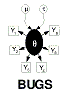

Examples Volume 1
Rats: Normal hierarchical model
Pump: conjugate gamma-Poisson hierarchical model
Dogs: log linear binary model
Seeds: random effects logistic regression
Surgical: institutional ranking
Salm: extra-Poisson variation in dose-response study
Equiv: bioequivalence in a cross-over trial
Dyes: variance components model
Stacks: robust and ridge regression
Epil: repeated measures on Poisson counts
Blocker: random effects meta-analysis of clinical trial
s
Oxford: smooth fit to log-odds ratios in case control studies
LSAT: latent variable models for item-response data
Bones: latent trait model for multiple ordered catagorical responses
Inhalers: random effects model for ordinal responses from a cross-over trial
Mice: Weibull regression in censored survival analysis
Kidney: Weibull regression with random effects
Leuk: survival analysis using Cox regression
Cox regression with frailties
References
:
Sorry - an on-line version of the references is currently unavailable.
Please refer to the existing
Examples documentation available from
http://www.mrc-bsu.cam.ac.uk/bugs
.